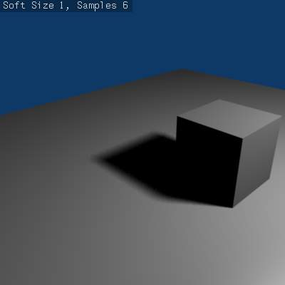
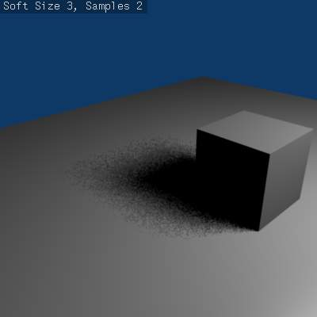

Lamps Raytraced Shadows¶
{kind=link}
Ray shadowing options for lamps.
Most lamp types (Lamp, Spot and Sun) share the same options for the ray-traced shadows generation, which are described below. Note that the Area lamp, even though using most of these options, have some specifics described in its own ray-traced shadows page.
- Ray Shadow
- The Ray Shadow button enables the light source to generate ray-traced shadows. When the Ray Shadow button is selected, another set of options is made available, those options being:
- Shadow sample generator type
Method for generating shadow samples: Adaptive QMC is fastest, Constant QMC is less noisy but slower. This allows you to choose which algorithm is to be used to generate the samples that will serve to compute the ray-traced shadows (for now, mainly two variants of Quasi-Monte Carlo, see Quasi-Monte Carlo method):
- Constant QMC
- The Constant QMC method is used to calculate shadow values in a very uniform, evenly distributed way. This method results in very good calculation of shadow value but it is not as fast as using the Adaptive QMC method; however, Constant QMC is more accurate.
- Adaptive QMC
- The Adaptive QMC method is used to calculate shadow values in a slightly less uniform and distributed way. This method results in good calculation of shadow value but not as good as Constant QMC. The advantage of using Adaptive QMC is that it is in general much quicker while being not much worse than Constant QMC in terms of overall results.
- Samples
- Number of extra samples taken (samples x samples). This slider sets the maximum number of samples that both Constant QMC and Adaptive QMC will use to do their shadow calculations. The maximum value is 16: the real number of samples is actually the square of it, so setting a sample value of 3 really means 32 = 9 samples will be taken.
- Soft Size
Light size for ray shadow sampling. This slider determines the size of the fuzzy/diffuse/penumbra area around the edge of a shadow. Soft Size only determines the width of the soft shadow size, not how graded and smooth the shadow is. If you want a wide shadow which is also soft and finely graded, you must also set the number of samples in the Samples field higher than 1; otherwise this field has no visible effect and the shadows generated will not have a soft edge. The maximum value for Soft Size is 100.0.
Below is a table of renders with different Soft Size and Samples settings showing the effect of various values on the softness of shadow edges:
Soft Size: 1.0, Samples: 6.
Soft Size: 3.0, Samples: 2.
Below is an animated version of the above table of images showing the effects:
Animated version renders with different Soft Size and Samples settings showing the effect of various values on the softness of shadow edges.
- Threshold
- Threshold for Adaptive Sampling. This field is used with the Adaptive QMC shadow calculation method. The value is used to determine if the Adaptive QMC shadow sample calculation can be skipped based on a threshold of how shadowed an area is already. The maximum Threshold value is 1.0.
{kind=link}
{kind=link}
{kind=link}
{kind=link}
{kind=link}
{kind=link}
{kind=link}
{kind=link}
{kind=link}
Quasi-Monte Carlo method¶
The Monte Carlo method is a method of taking a series of samples/readings of values (any kind of values, such as light values, color values, reflective states) in or around an area at random, so as to determine the correct actions to take in certain calculations which usually require multiple sample values to determine overall accuracy of those calculations. The Monte Carlo method tries to be as random as possible; this can often cause areas that are being sampled to have large irregular gaps in them (places that are not sampled/read). This in turn can cause problems for certain calculations (such as shadow calculation).
The solution to this was the Quasi-Monte Carlo method.
The Quasi-Monte Carlo method is also random, but tries to make sure that the samples/readings it takes are also better distributed (leaving less irregular gaps in its sample areas) and more evenly spread across an area. This has the advantage of sometimes leading to more accurate calculations based on samples/reading.